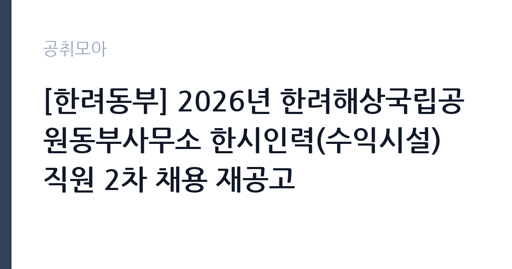

[공공기관] [한려동부] 2026년 한려해상국립공원동부사무소 한시인력(수익시설) 직원 2차 채용 재공고
국립공원공단 · 경남 · 마감 2026-10-26 (D-5) · 출처 잡알리오

한눈에 보는 모집 조건
| 기관 | 국립공원공단 |
|---|---|
| 공고명 | [한려동부] 2026년 한려해상국립공원동부사무소 한시인력(수익시설) 직원 2차 채용 재공고 |
| 고용형태 | 일용직 |
| 근무지 | 경남 |
| 게시일 | 2026-10-21 |
| 마감일 | 2026-10-26 (D-5) |
지원자격, 이렇게 읽으세요
- 공공기관 채용공시
- 세부 조건은 원문 공고문 확인
일용·단기 근로는 정해진 사업 기간이나 단기 업무를 위해 채용되는 형태입니다. 근무 일수와 일당이 정해지고 사업 종료 시 근로관계가 끝납니다. 계절 사업이나 행사 지원, 단기 대체 인력으로 활용되는 경우가 대표적입니다. 이번 공고는 국립공원공단에서 직접 진행하는 자체 전형으로, 응시자격과 제출서류는 공고문에 항목별로 제시됩니다. 국립공원 한시인력은 계약 기간이 정해진 기간제 신분이며, 근무 기간은 대체로 봄·가을 성수기나 특정 사업 기간에 맞춰집니다. 자격 요건은 공고마다 다르지만 학력 제한을 두지 않고 신체 건강과 현장 근무 가능 여부를 보는 경우가 많습니다. 산악 지형을 걸을 수 있는 체력이 실질적인 자격입니다. 운전면허와 산림·환경 관련 자격은 우대 사항으로 붙는 경우가 있습니다. 근무지가 사무소 관할 구역 내 탐방로이므로 거주지와 통근 가능성을 확인해야 합니다. 서류는 접수 마감 이후 보완이 되지 않으므로 자격 요건과 증빙 서류를 마감 전에 모두 갖춰야 합니다. 공고문에 명시된 우대 사항은 해당 여부를 확인해 증빙을 첨부해야 가점이 반영됩니다. 공고문의 응시자격 표를 보면 자격 항목이 여러 줄로 나뉘어 있으므로, 각 줄을 하나씩 체크하며 본인 해당 여부를 표시해 두면 누락을 줄일 수 있습니다.
이 공고의 포인트
이 공고의 첫 번째 포인트는 고용 형태입니다. 사업 기간에 맞춰 채용되므로 근무 일수와 보수가 비교적 명확합니다. 대신 다음 근무지를 별도로 구해야 합니다. 두 번째는 업무 범위가 명확하다는 점입니다. 국립공원 현장 관리 직무로 채용되므로 배치 이후 담당 업무가 크게 흔들리지 않습니다. 세 번째는 근무지입니다. 경남 지역 근무로 수도권 공고에 비해 지원자 분포가 넓지 않아 상대적으로 경쟁이 분산되는 경우가 있습니다. 재공고로 올라온 공고라 이전 차수 지원자와의 형평성 기준을 확인할 필요가 있습니다. 같은 직무 공고 중에서는 접수 마감이 가장 빨라 일정을 앞당겨 잡아야 합니다. 선발 인원은 공고문에 명시되어 있으니 모집분야 항목을 함께 확인하십시오.
전형은 어떻게 진행되나
1차 서류, 2차 면접의 2단계로 진행되는 구성이 일반적입니다. 서류에서는 자격 요건과 경력 증빙을 확인하고, 면접에서는 실제 업무 수행 능력과 조직 적응을 봅니다. 직무에 따라 필기시험이나 실기, 컴퓨터 활용 시험이 추가되기도 하므로 공고문의 전형표를 먼저 확인하십시오. 단계별로 합격자만 다음 전형에 응시할 수 있고, 단계마다 응시 자격 확인 서류를 다시 제출해야 하는 경우가 있습니다. 최종합격자 발표 후에는 신원조회와 채용 신체검사가 남아 있습니다. 응시 수수료가 있는 경우 환불 기준과 기한이 정해져 있으니 접수 전에 확인하십시오.
원문에서 확인한 전형 방식
ㆍ공단「인사규정」제18조(결격사유)에 해당되지 않은 자 ㆍ근무시작(예정)일부터 근무 가능한 자 ㆍ그 외 나이, 전공, 학력 등 제한 없음
이런 분께 추천해요
- 산악 지형에서 장시간 활동이 가능한 분
- 탐방객 응대와 계도 업무에 거부감이 없는 분
- 주말·성수기 근무 일정을 수용할 수 있는 분
지원 전 체크리스트
- 응시자격 요건과 경력 기준을 충족하는가 — 경력은 증명서로 입증해야 합니다
- 근무 기간과 일당·월급 지급 방식을 확인했는가
- 제출서류 목록을 모두 준비했는가 — 누락 시 서류 단계에서 탈락합니다
- 접수 마감 2026-10-26 이전에 접수 방식을 확인해 제출했는가
모집 일정과 제출 타이밍
접수 마감은 2026-10-26이고 공고는 2026-10-21에 게시되었습니다. 준비 기간 5일 안에 서류 작성, 증빙 발급, 접수를 모두 마쳐야 하므로 주말을 포함해 일정을 미리 나누는 것이 좋습니다. 특히 경력 기술서나 직무수행계획서를 요구하는 공고는 작성에 시간이 걸리므로 첫날 초안을 잡으십시오. 서류 합격자 발표와 면접 사이 간격이 짧은 경우가 많아 면접 예상 질문은 서류 제출 전에 정리해 두는 편이 유리합니다. 마감 직전에는 접속이 몰리므로 여유를 두고 제출하십시오. 접수 첫날에 몰리면 시스템 접속이 지연될 수 있으므로 오전 시간대 제출이 안전합니다. 경남 근무지는 산업·항만 시설 인근이 많아 근무 환경을 미리 파악하는 것이 좋습니다. 마감까지 일주일 안팎이 남아 서류 준비와 증빙 발급을 병행해야 합니다. 선발 인원은 공고문의 모집분야 항목에 직종별로 제시되어 있습니다.
직무 이해하기: 공공기관
국립공원공단은 전국 국립공원을 관리하는 공공기관입니다. 각 사무소는 탐방로와 야영장, 안내 시설을 운영하고 자연 자원 보전과 이용객 안전을 담당합니다. 성수기와 단풍철에는 탐방객이 크게 늘어 현장 인력을 추가로 채용합니다. 국립공원 현장 업무는 탐방로와 시설을 순찰하고, 이용객의 안전과 공원 질서를 유지하는 일입니다. 탐방로 훼손 구간을 점검하고 보수 작업을 지원하며, 불법 취사·야영·채취 같은 행위를 계도합니다. 조난이나 부상 상황에서는 위치를 파악해 구조 요청을 연결하고 1차 응급조치를 합니다. 성수기와 단풍철에는 안내와 통제 업무가 늘어나고 주말 근무가 포함됩니다. 야생생물 보호와 쓰레기 수거, 시설물 안전 점검도 일상 업무입니다. 업무는 혼자 처리하기보다 부서 단위로 나눠 진행되므로 담당 구역과 협업 범위를 입사 초에 확인하는 것이 중요합니다. 현장 업무와 사무 업무의 비중은 기관의 사업 일정에 따라 계절별로 달라집니다.
자기소개서 작성 팁
국립공원 지원서는 자연 자원을 대하는 태도와 현장 근무 경험을 연결하면 설득력이 생깁니다. 등산·트레킹 경험을 단순 취미로 쓰지 말고, 탐방로 관리 상태나 이용객 행동을 관찰한 내용으로 구체화하십시오. 안내·교육·봉사 경험은 응대 역량의 근거가 됩니다. 한시인력이라는 짧은 계약 기간을 어떻게 의미 있게 채울지에 대한 계획을 한 문단 넣으면 좋습니다. 구성은 지원 동기, 직무 경험, 기여 방안 순서가 무난합니다. 지원 동기는 국립공원공단의 사업 중 본인이 관심을 가진 부분을 한 가지로 좁혀 서술하고 추상적인 표현은 줄이십시오. 직무 경험은 담당했던 업무와 규모, 결과를 수치로 제시하면 설득력이 올라갑니다. 기여 방안은 입사 후 첫 3개월과 1년 계획으로 나눠 쓰면 준비도가 드러납니다.
면접 준비 포인트
면접은 현장 대응과 응대 태도 중심입니다. 탐방객이 금지 구역에 들어가려 할 때 어떻게 설득할지, 부상자를 발견하면 어떤 순서로 조치할지, 악천후에 순찰을 어떻게 조정할지 묻습니다. 공원 자원을 보호한다는 관점과 안전 우선 원칙을 함께 언급하십시오. 등산 경험과 체력 관리 방법도 자주 나오는 질문입니다. 답변은 상황, 판단, 조치의 순서로 정리하면 전달이 분명해집니다. 모르는 질문에는 모른다고 밝히고 확인 방법을 제시하는 편이 억지 답변보다 낫습니다. 마지막에는 근무 의사와 함께 2026-10-26 이후 일정에 언제든 응할 수 있다는 점을 전달하십시오. 마지막 질문 시간에는 근무 조건에 대한 확인 사항을 한 가지 정도 준비해 가면 성실성이 드러납니다.
급여·근무조건 읽는 법
국립공원 한시인력의 보수는 국립공원공단의 기간제 근로자 보수 기준을 따르며, 월급 형태와 일급 형태가 모두 있습니다. 계약 기간이 정해진 기간제이므로 월급여와 함께 계약 시작일과 종료일을 반드시 확인해야 합니다. 2026년 최저임금은 시급 10,320원, 월 환산 2,156,880원이므로 이보다 낮은 조건은 있을 수 없습니다. 구체적인 금액은 공고문의 처우 항목에 표로 제시되니 원문에서 확인하십시오. 성수기 초과근무와 휴일 근무 수당이 붙으면 실수령액이 달라집니다. 2026년 적용 최저임금은 시급 10,320원, 월 환산 2,156,880원(주 40시간·209시간 기준)입니다. 고용노동부 고시 제2025-47호로 확정된 금액입니다. 실수령액을 계산하려면 세금과 4대 보험료를 빼야 합니다. 공고문에는 세전 금액만 제시되는 경우가 많으므로, 월 급여에서 약 9% 안팎의 공제가 발생한다고 보고 대략적인 수령액을 가늠하십시오. 부양가족 수와 비과세 항목에 따라 차이가 나므로 정확한 금액은 급여 담당 부서에 문의하는 것이 가장 확실합니다. 수당 항목과 지급 주기도 함께 확인하십시오.
자주 묻는 질문
- 선발 인원은 몇 명인가요?
공고문의 모집분야 항목에 직종별 인원이 표로 제시되어 있습니다. 첨부된 공고문 원문에서 확인하십시오. - 근무지는 어디인가요?
경남 지역의 국립공원공단 소속 근무지입니다. 세부 주소와 출퇴근 조건은 원문 공고문에서 확인할 수 있습니다. - 보수는 얼마인가요?
채용 신분(일용·단기)과 기관 임금 규정에 따라 정해지며 구체적인 금액은 공고문 처우 항목에 제시됩니다. 금액이 공개되지 않은 경우에는 원문의 보수표를 확인하십시오.
함께 보면 좋은 공고
[공공기관] 2026년도 업무지원직(시설지원직) 신규직원 블라인드 공개채용 모집 공고 — 마감 2026-11-05[공공기관] 2026년 제1차 새울원자력본부 기간제근로자 채용 — 마감 2026-11-06[공공기관] 한국기술교육대학교 고용서비스인재교육추진단 연구원 채용 공고 — 마감 2026-11-08출처: 잡알리오 공개정보를 바탕으로 공취모아가 정리한 안내글입니다. 모집 조건·일정은 변경될 수 있으니 지원 전 반드시 원문 공고문을 확인하세요. 본 글은 정보 제공용이며 합격을 보장하지 않습니다.